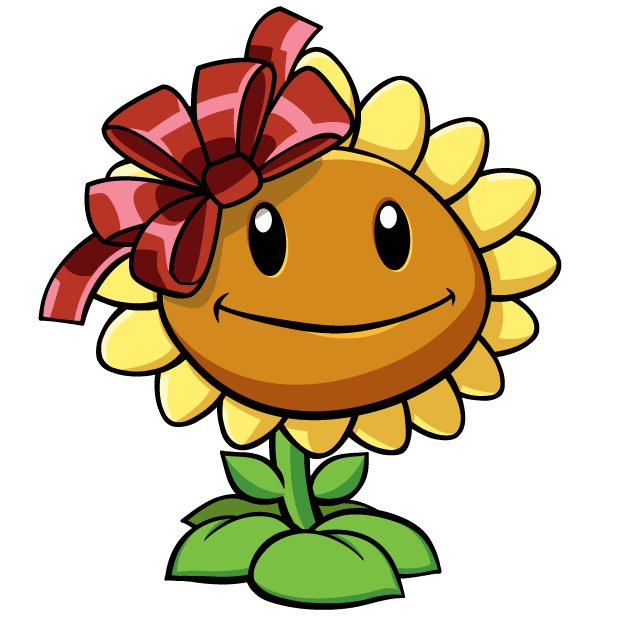

Choose your challenge of liking:

Choose your challenge of liking:
Adventure Mode: No Sunflower
| Difficulty | Some Luck may be Required |
| Rating |

|
| Type | Playthrough |
Objective
Complete Adventure Mode without using Sunflowers or Sun-Shrooms
Rules
Generally no cheating
(though some RNG is needed)
"Now that it's nighttime, you need Sunflowers more than ever. Are you sure you want to play the level without them?"
Sunflowers are key to everyone's playthrough of PvZ. They produce sun, which allows us to grow Plants on the lawn to defend against Zombies.
What happens if you are deprived of it? Do the Zombies win? Why can't every level be a conveyor belt level? I am sure there's a solution isn't there?
Let's find out!
(Oh, and to answer the conveyor belt question. That would be Easy Mode, and we are epic gamers of the epic variety, which means we are going to get good at a game, or become a games journalist.)
By no Sunflowers, this also extends to not using Sun-Shroom. This means the only method of acquiring sun is the ones that fall from the sky.
It is recommended that you have completed the game at least once, to have a better idea of each plant and zombie's ability.
To clarify: This challenge is specifically for the first time playing Adventure Mode, not the second, as the levels are very much harder the second time.
Conveyor belt levels are not counted – and honestly should not be a problem without sun – because, well, they don't require sun. Special Delivery!
Your challenge begins here. I wish you the best of luck.
Normal Zombies are easy; a Peashooter can easily take care of them.
Conehead Zombies start appearing, but they are just about beaten by a Peashooter planted in the first column (the moment it appears)
Pole Vaulting Zombie appears, and is a problem for Peashooters to take out. Stall by putting a cheap plant in front of it to slow it down.
Alternatively, you get the Snow Pea after beating this level, so use that to your advantage. Note: Placing more than 1 Snow Pea in the same lane does absolutely nothing but waste 75 sun, thank me later
Buckethead Zombies appear, and are the strongest Zombies for a long while. Use insta-kill plants like Potato Mine – make sure to stall! – and Chomper, preferably protected by a Wall Nut
The Night stages feature two new Zombies that have a lot of health. Between that and a lack of Sun, Lawn Mowers are essential here to ensure a victory.
Seeing that the only plant you can possibly use is Puff-Shroom, do exactly that. Puff-Shroom spam is great because its free, and is a great source of cannon fodder. Not that you have anything else you can do.
Newspaper Zombie comes for a stroll. By having ~4-5 Puff-Shrooms in one row before the Newspaper Zombie appears and the Newspaper breaks, Newspaper Zombie can be taken out before it can finish off all the Puff-Shrooms.
Enter the Screen Door Zombie. This is not a Zombie you can take out simply by Puff-Shroom spam. No, you will have to sacrifice the row of Puff-Shrooms.
What you do want to do, however, is to stall for as long as possible to take out as many Zombies with the singular Lawn Mower.
Football Zombie steps in, basicaly being a faster version of Buckethead Zombie with more health. Yay.
This is another Zombie that will have to be killed by Lawn Mower. What you do want though, is to follow protocol for Lawn Mower clearance.
Like the Screen Door Zombie, stall for as long as it is possible for you to without losing other rows, and then the Lawn Mower will do the rest.
Dancing Zombie and his Backup Dancers are summoned. They are hardly a threat, but a warning: If a Lawn Mower activates and take out all Zombies on a row, Backup Dancers may be spawned on those rows with no protection.
This means that Dancing Zombie is one of the only Zombies that you do not want near your Lawn Mowers; take him out at a distance as far away from the Lawn Mower as possible.
Pool Cleaners are a good upgrade to have as soon as possible, as Lawn Mowers only take care of Zombies in the first column, while Pool Cleaners cover the entire lane.
If you haven't realised, Snow Peas are one of the best plants to use as they can easily slow Zombies down. Add to that the new Puff-Shrooms you acquired, and you are golden.
Snorkel Zombie sneaks into the lawn, and manages to avoid all of the Plants.
Though anyone who played the game before will know to put Wall-Nuts on Lily Pads to flush it out, ha!
Following the Subarban Almanac's desription, Zomboni revs his engine and spreads snow onto the lawn.
Seeing he is immune to Snow Peas' slowing peas, the best option is to take him out fast with an insta-kill, such as Squash, and later Jalapeno
With a <Insert Dolphin Sound Here>, Dolphin Rider Zombie does the 3m platform dive (the only part that's Olympic-related), and leaps onto a Dolphin with the max level of grace, and proceeds to take out the whole row in like 3 seconds. (Think Fast!)
Planting a Lily Pad will cause Dolphin Rider to jump over and lose its Dolphin and speed, and makes it a lot more manageable to take care of.
Between it being nighttime again, and there being a giant wall of Fog, it's pretty easy to see why this stage is the hardest of the bunch (barring Gargantuars later on).
Since there's a lack of sun, you will rely on Puff-Shrooms and Sea-Shrooms more than ever.
While the pool usually has less dangerous Zombies, Sea-Shrooms have a rather slow recharge time. Additional protection can be granted to one lane of the pool if one picks Scaredy-Shroom and Lily Pad (50 sun total), as Scaredy Shroom has a whole lawn's range.
Weirdly enough, Snorkel Zombie don't appear here, so that's good.
Keep your Lawn Mowers alive for as long as possible. There's a reason why.
Jack-in-the-Box Zombie appears, and will blow up at exactly around the time your Puff shrooms get in range. Yay!
Either plant Puff-Shrooms near the front to take him out (Good luck figuring out which row), or plant them at the back so he destroys himself before getting to the Puff-Shrooms
Balloon Zombie, as opposed to Snorkel Zombie, is too high to be hit by anything that isn't Cactus, and guess what? No Cactus (and certainly not Blover)!
That means you will have to rely on Balloon Zombie appearing on rows with Lawn Mowers/Pool Cleaners (and not on the same row twice). This may seem impossible, but there are fewer Balloon Zombie than you think. If you get lucky, the levels are still doable, just with a bit of patience.
Digger Zombie decides Minecraft can be played in real-life, and proceeds to dig all the way to the back of the lawn to eat your valuable plants.
Jokes on you, I ain't got valuable plants! Simply replace the eaten Puff-Shrooms, and you are good to go.
Pogo Zombie, with a spring in his step – literally, forgive the pun – enters to bounce over all your plants, and reach the end.
Imagine thinking it can jump past 5-6 columns of Puff-Shrooms! The unactivated Puff-Shrooms at the back are more than ready to take it out. If not, make sure you saved Lawn Mowers!
Roof Cleaners. Do I even have to explain why they are needed? Without purchasing them, the Roof will not have a last line of protection as it would on the Lawn or in the Pool
Because of the slope on the roof, a lot of plants do not work well here. Stick to Cabbage-pult and Kernel-pult for your main attackers. They are cheap and consistent.
Also, now that you can actually plant Plants now, it's a great idea to carry in as many insta-kill plants you can carry, because a lot of the harder Zombies can only be stopped in this way without losing Roof Cleaners.
If you want, you can continue to use Puff-Shrooms to stall, but Flower Pots may be eaten as well.
Bungee Zombies love stealing your Plants. Not much you can do about that, at least not until you get Umbrella Leaf at Level 5-6.
If it's a valuable plant he's taking (not that anything you have at the moment is particularly powerful), insta-kills can be deployed.
Ladder Zombies, for some reason, are like 3 times faster when carrying a ladder the size of their body after climbing up a roof, but slow down to a crawl when they lose it. Is this some sort of universal paradox I don't get?
Regardless, if you have the sun, spending money on Magnet-Shroom and Coffee Bean is a great way to slow them down. If you don't have the sun however, or have not gotten Coffee Bean (you get it this level), an insta-kill might be more worth it.
Catapult Zombie drives in, and starts lobbing Baskets at you. What do you do? You use Umbrella Leaf! Except you won't have them until completing the level, so just insta-kill them if other Zombies are in the way.
The mutant terror of the horde appears: The Gargantuar. There are two choices here. You let the Gargantuar take down a line and sacrifice Plants and a Lawn Mower, or use 1-2 Insta-Kill Plants.
Generally, when Zombie Imp is thrown, it's a good warning that 1 Insta Kill can take out the Gargantuar.
The Mini-Game levels that use the sun mechanic include:
Slot Machine may take a few tries, but if you get lucky (literally) and get a lot of sun, you should be able to win before the Zombies overwhelm you.
Seeing Stars is doable so long as you commit Starfruit Spam as quickly as possible. Puff-Shroom stall remains viable.
Bobsled Bonanza is another good level for Starfruit, due to the large numbers of weak Zombies appearing (barring Zomboni).
In Zombotany 2, the Zombies attacking the Pool rows are much weaker, so you will want to plant most of your attacking plants in the pool. This also applies to Bobsled Bonanza.
In Pogo Party, you either take Pogo Zombies out quick, or you take away their Pogo Sticks to slow them down.
ShyGuyMask has a great video on completing Pogo Party using a very specific strategy of Glooom-Shrooms, Magnet-Shrooms and Garlic. More info in the Gallery.
While the Survival: Day, Survival: Pool and Survival: Roof levels can be done easily through the use of Starfruit Spam, Cob Cannons and the Pogo Party Strategy
However, at Night and in the Fog, it is impossible to win by relying solely on Puff-Shrooms, especially when Zombies such as Gargantuar can appear.
This means that this challenge (and Hard Mode) is unfortunately impossible, unless you were to get legendary RNG (and even then it might still be impossible).
In theory, this is impossible as your strongest resource, Magnifying Grass (Yes, no one insult Magnifying Grass), is lost. In practice, PvZ 2 is a Free-To-Play Game.
If you upgraded every cheap Plant to their Max Level, and used Plant Food/Power-Up whenever you can, this challenge is technically possible. That is, if you want to get bankrupt.
Note: This does not include levels where there is an objective that requires the production of a minimum amount of sun.
 |
 |
 |
|||
|
|
||||
 |
 |
||||
Previous | Index | Next |
Start |
 ShyGuyMask attempting to complete Adventure Mode without Sunflowers
ShyGuyMask attempting to complete Adventure Mode without Sunflowers